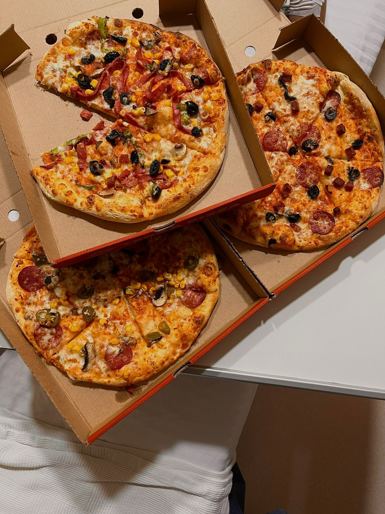

Піца
Традиційна неаполітанська піца має м’яке тісто та прості інгредієнти.
Неаполь відомий піцою, Болонья — традиціями приготування пасти. Тірамісу та джелато доповнюють гастрономічну подорож.

Традиційна неаполітанська піца має м’яке тісто та прості інгредієнти.
Різні форми макаронних виробів поєднують із різними соусами.
Десерт із кавою, маскарпоне та печивом савоярді.
Італійський заморожений десерт із різними смаками.
Ризото поширене на півночі, а оливкова олія, томати та морепродукти характерні для багатьох південних страв.